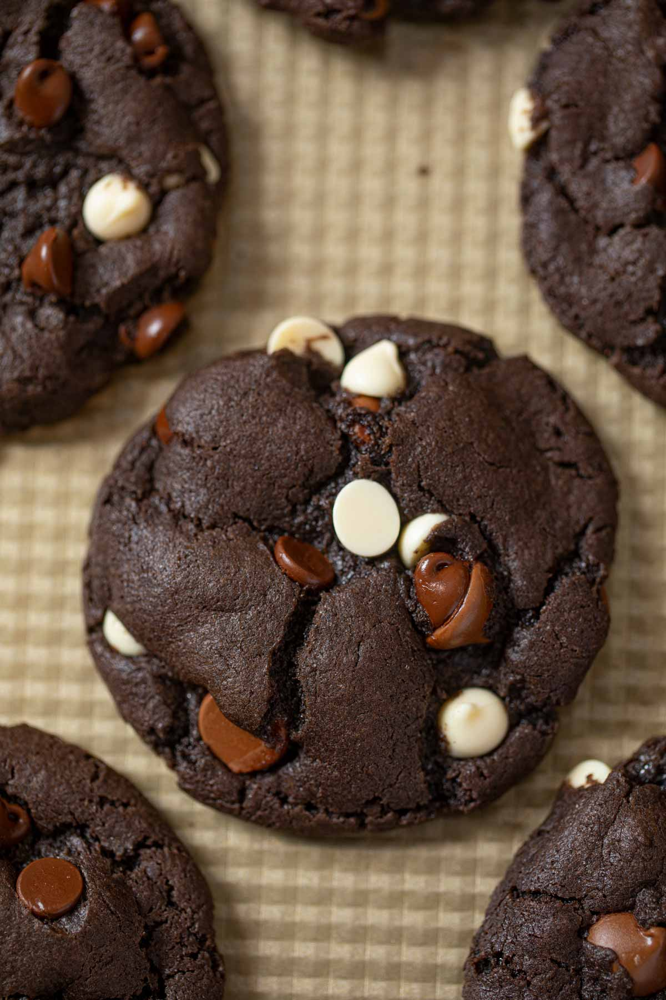

back

Description
Large or small, these triple chocolate cookies are crispy on the outside and chewy on the inside.
Refrigerating the batter for 48 hours before baking is ideal, as this allows the dough to fully form its flavor.
Ingredients
- ¾ cup brown sugar
- ½ cup unsalted butter, at room temperature
- ½ cup white sugar
- 1 teaspoon salt
- 1 large egg
- 1 teaspoon vanilla extract
- 1 ½ cups all-purpose flour
- ¾ teaspoon baking soda
- 1 cup milk chocolate chips
- 1 (3 ounce) bar dark chocolate, cut into chunks
- 3 tablespoons white chocolate chips
Steps
Step 1
- Combine brown sugar, butter, white sugar, and salt in a large bowl
- beat with an electric mixer until a creamy, deep brown mixture forms.
- Add egg and vanilla
- beat until mixture lightens and becomes smooth, 10 to 15 seconds.
Step 2
Mix flour and baking soda together in a separate bowl.
Add slowly to the wet ingredients until mostly incorporated, but some white traces of flour remain.
Fold in milk chocolate, dark chocolate, and white chocolate using a spatula, not the mixer.
Cover the dough and refrigerate for at least 30 minutes, or up to 48 hours.
Step 3
Preheat the oven to 350 degrees F (175 degrees C) when ready to bake.
Step 4
Divide cold dough into 2 1/4-ounce portions and place on a cookie sheet.
Step 5
Bake in the preheated oven until the edges start to look golden brown and crispy, 10 to 12 minutes.
Do not overbake; the centers will not look fully done.
Cool until cookies are set, about 30 minutes.
Back to top